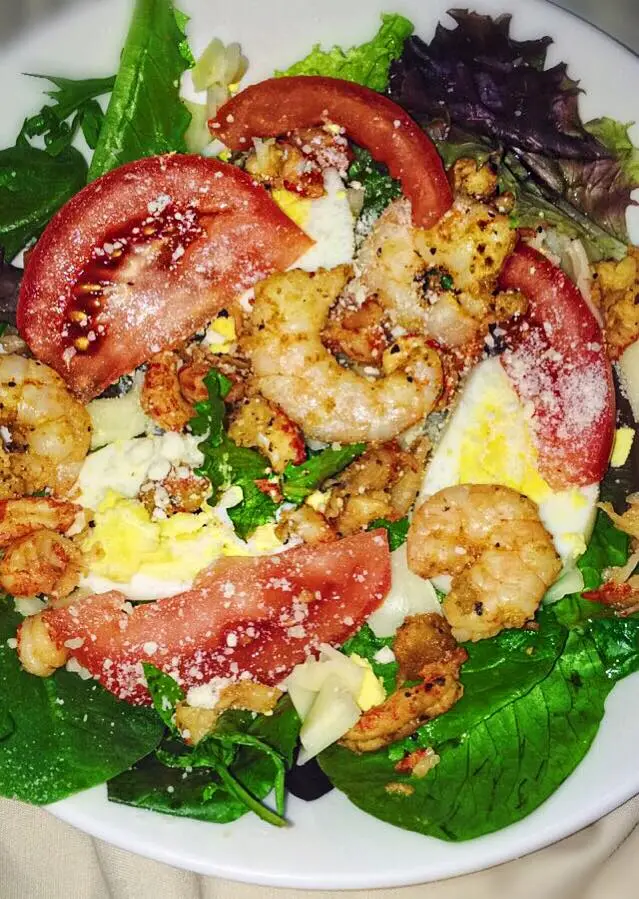

Seafood Salad with Remoulade Dressing

Description:
Salads!!! I loveeeee a GOOD salad! This seafood salad is FRESH and
FLAVORFUL. Half of the time I don't eat it with dressing. But when I do it's
with a Remoulade dressing that is delicious!
Ingredients:
Salad
- 1 lb shrimp
- 1 lb crawfish drained
- 12 oz lump crab meat
- 1 lb crawfish tails
- 16 oz lump crab meat
- greens of your choice (I prefer arugula)
- garlic and onion powder
- Accent
- Cajun spices
Remoulade Dressing
- 1 cup mayo
- 1 TBS creole mustard
- 2 TBS Worcestershire Sauce
- 1 TBS chili powder
- 1 TBS olive oil
- juice from 1/2 of a lemon
- 1 TBS Louisiana hot sauce optional
- salt and pepper to taste
- green onions and parsley finely chopped
Steps:
Salad
- First, season shrimp with the cajun spices, onion powder and garlic powder
- Then saute them in the oil of your choice
- Season crawfish lightly with the cajun spices and the lump crab with the Accent
- Pile all of that goodness on top of your choice of greens adding the crab meat on top
- Feel free to add any other veggies you desire
- Saute until spinach has wilted
- Remove spinach from the pan and set aside
Dressing
- Add all of the ingredients into a bowl and whisk together. Be sure to taste and adjust seasoning as necessary
- ENJOY!!!